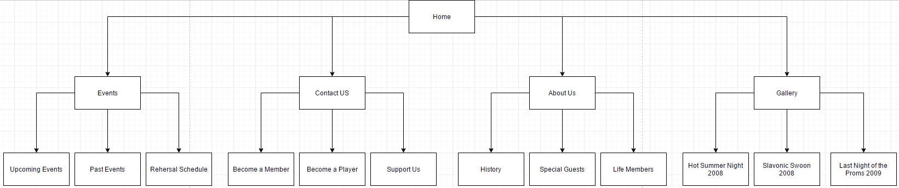

Members: James Shuttleworth, Yuvan Bernstein, Luke West, Kim Hardie
The main goal is to raise awareness of the Barrier Reef Orchestra and increase the number of people attending the concerts and getting involved in the Orchestra itself. The site should also help to increase the number of sponsors for the orchestra, and conductors showing interest in getting involved.
The success of the website will be evaluated from a count of the amount of tickets sold via the Civic Theatre, as well as an increase in the number of benefactors. An increase in the number of applicants to play in the orchestra will be counted and compared to previous months to measure any potential increase. Finally, a method for receiving feedback will be utilised and analysed in regards to what people want from the orchestra.
The site will be designed to appeal to a younger demographic of people (both genders), in particular; ages between 13 - 30. To attract people from this age group the site will have a simple look and feel to it. it will be easy to identify where information can be found. It will include interactive methods like hiding text and being able to view the text by pressing a button that says more. It will not have large amounts of texts that may be hard on the eyes. It will also incorporate various images that will make the site look attractive and spunky for the targeted age group, without alienating the older demographic.
-Home
-Events - Upcoming Events - Past Events - Rehearsal Schedule
-Contact Us - Become a Member - Become a Player - Support Us
-About Us - History - Special Guests - Life Members
-Gallery - Hot Summer Night 2008 - Slavonic Swoon 2008 - Last Night of the proms 2009

provide links here to your 2 comps (images or Web pages)
provide a link here to your developed pages
{kind=link}
{kind=link}